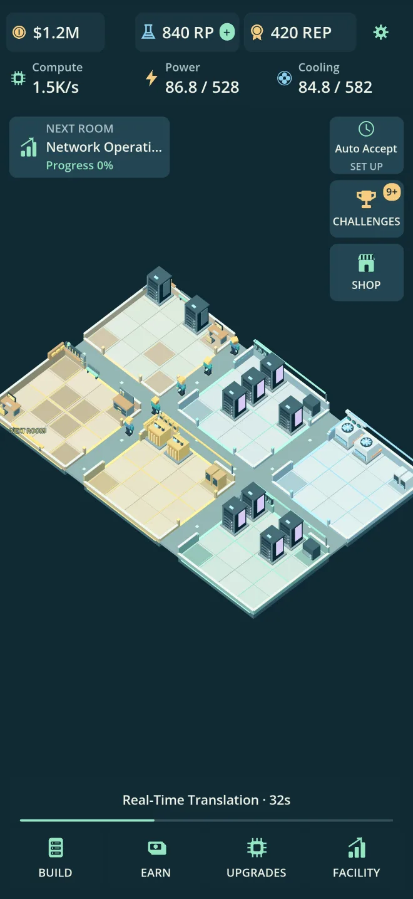
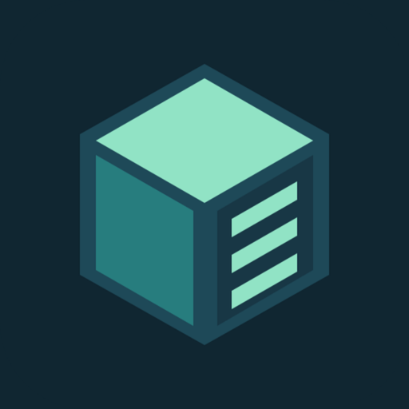
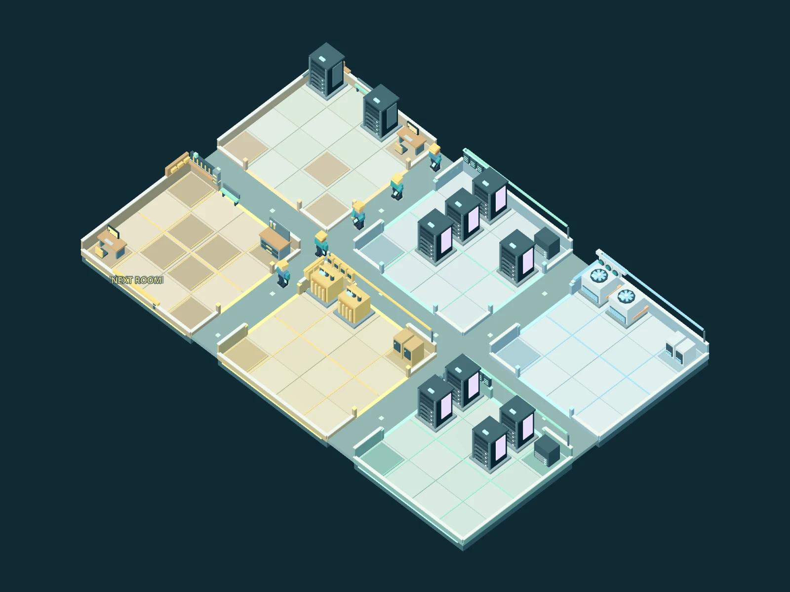
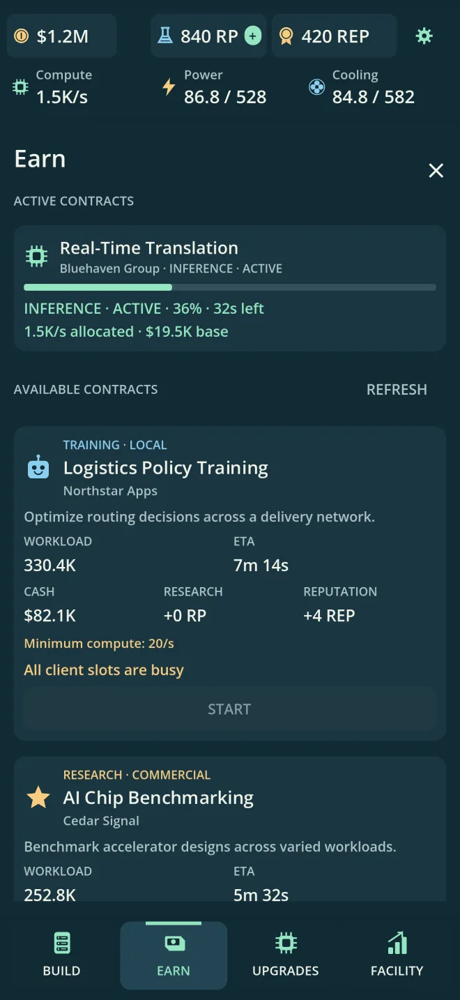
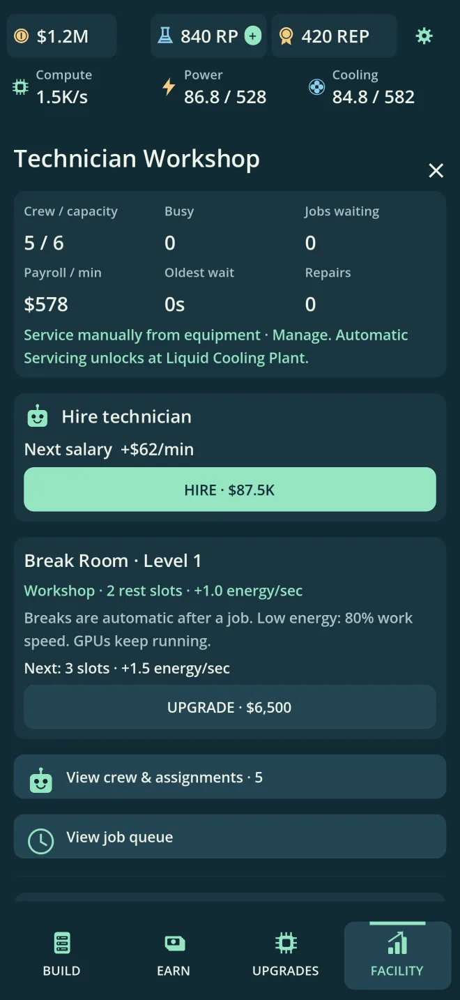

A place for every possibility.
Place racks, power, and cooling on a physical grid. Develop your rooms and expand through 15 departments at your own pace.

Compute TycoonBuild your own data center, one GPU at a time.
A little planning. A lot of possibilities.
For iPhone · Free with optional in-app purchases

From your first garage lab to a sprawling AI campus, every new rack changes the plan.
Install GPUs. Win compute contracts. Keep the lights on and the servers cool. Grow a crew that can keep up, and turn a tiny operation into something you’re proud of.

Place racks, power, and cooling on a physical grid. Develop your rooms and expand through 15 departments at your own pace.

Take on inference, training, and research contracts. Balance your available capacity with the rewards that move your campus forward.

Hire and train technicians to build, upgrade, and repair your facility. Research better hardware and unlock automation as you grow.
Build at your pace. Come back to progress.
Core gameplay works offline. Your campus can earn up to 30 minutes of offline progress per shift. Normal progression is available through play, with optional purchases and rewarded ads.
Start your campusHave a question, found a bug, or want to share what you’ve built? Get in touch.
kevinmokex@gmail.comEmail a description of the issue, your device model, and the app version. A screenshot can help explain what happened. Please don’t send passwords or payment details.
Your game progress is saved on your device. Deleting the app may remove it. Offline progression is capped at 30 minutes per shift.
For eligible permanent purchases, use Restore purchases in the game with the Apple Account used to buy them. For billing and refund requests, visit Apple’s purchase support. You can also email the developer for help with missing in-game benefits.
Read the Compute Tycoon privacy policy for information about local saves, optional ads, purchases, and support communications.